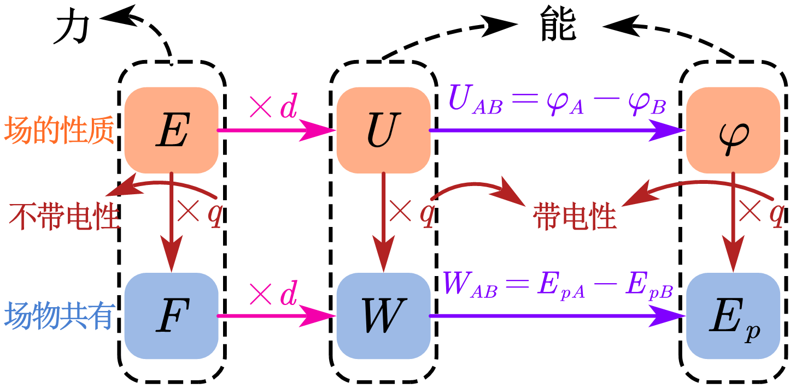
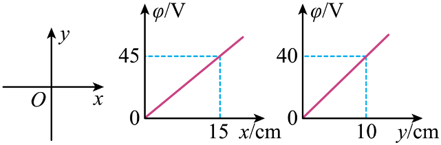
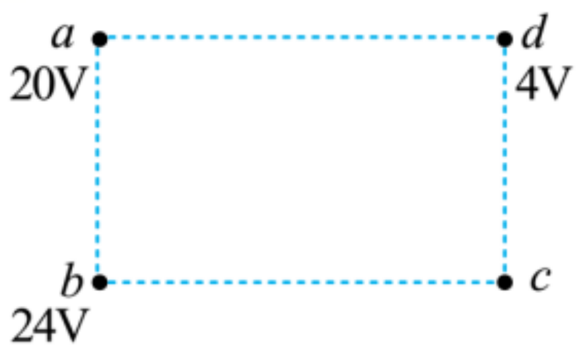
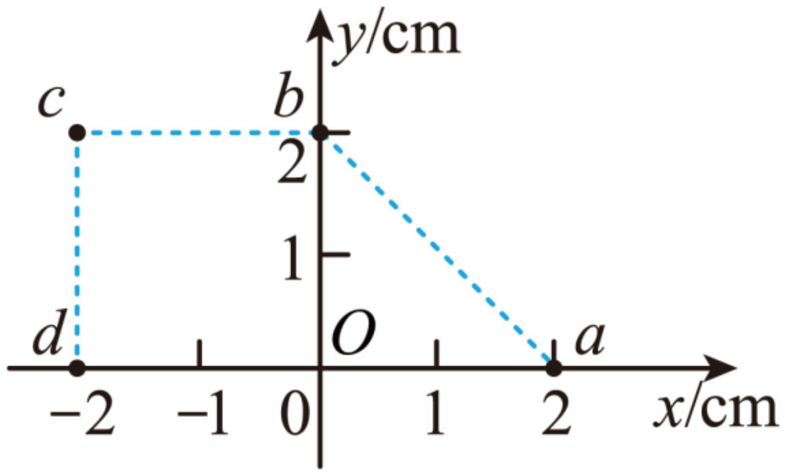
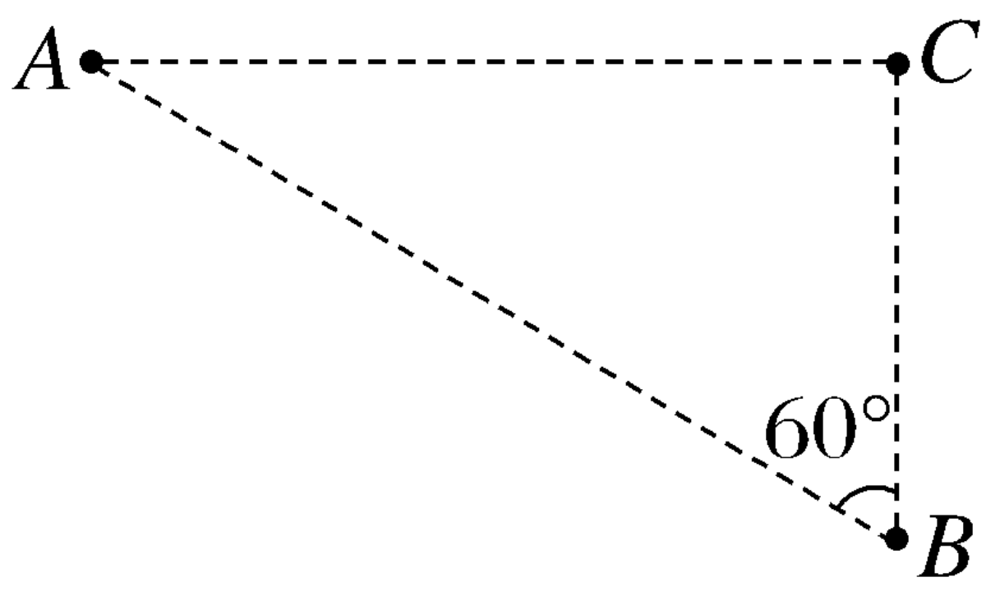

静电场复习
静电场中力的性质
静电平衡
- 处于静电平衡状态下的导体，内部的电场强度处处为零
- 导体内部没有净剩电荷，电荷只分布在导体的外表面
静电场中能的性质
物理量关系梳理

- 静电力做功与电势能的关系：W_{AB}=E_{pA}-E_{pB}
- 若规定上式中电荷在 B 点的电势能为 0，则电荷在 A 点的电势能数值上等于 W_{AB}。也就是说，电荷在某点的电势能，等于把它从这点移动到零势能位置时静电力做的功。
快问快答
在某点电荷激发的电场中，一带电量为 -q 的点电荷从无穷远处移动到 A 点，静电力做功为 W，求： 1. 该点电荷在 A 点的电势能； 2. A 点的电势。
- 无穷远处电势为零，点电荷在 A 的电势能等于把它从 A 移动到零势能位置时静电力做功，即 E_{pA}=-W
- \varphi_{A}=\frac{E_{pA}}{-q}=\frac{W}{q}
练习
电场中有 A、B、C 三点，一带电量为 q=-2\times 10^{-9} \;C 的点电荷在 A 点的电势能为 E_{pA}=1.2 \times 10^{-8}\;J，将该点电荷从 A 点移动到 B 点，静电力做功为 W_{AB}=1.8\times 10^{-8}\;J，C 点电势为 \varphi_{C}=-5V。
- 求点电荷在 B 点的电势能；
- 求 B 点的电势；
- 求 B、C 两点间的电势差；
- 求点电荷从 B 点移动到 C 点的电场力做功。
- W_{AB} = E_{pA}-E_{pB} \Rightarrow E_{pB} = E_{pA}-W_{AB}=1.2 \times 10^{-8}-1.8\times 10^{-8}=-6\times 10^{-9}\;J
- \varphi_{B} = \frac{E_{pB}}{q}=\frac{-6\times 10^{-9}}{-2\times 10^{-9}}=3V
- U_{BC} = \varphi_{B}-\varphi_{C}=3-(-5)=8V
- W_{BC}=qU_{BC}=-2\times 10^{-9} \cdot 8=-1.6\times 10^{-8}\;J
电势差和场强的关系
| 公式 | 物理含义 | 适用范围 |
|---|---|---|
| E=\frac{F}{q} | 场强的定义式 | 一切电场 |
| E=k\frac{Q}{r^{2}} | 真空中点电荷场强的决定式 | 真空中，场源电荷 Q 是点电荷 |
| E=\frac{U}{d} | 匀强电场中场强的决定式 | 匀强电场 |
练习
空间存在着平行纸面的匀强电场，但电场的具体方向未知，现在纸面内建立直角坐标系 xOy，用仪器沿 Ox、Oy 两个方向探测该静电场中各点电势，得到各点电势 \varphi 与横、纵坐标的函数关系如图所示。求该电场的电场强度 E。

匀强电场特点
- 匀强电场中，两条平行线段上相等距离的两点间的电势差相等
\begin{cases} AB / / CD \\ AB = CD \end{cases} \Rightarrow U_{AB} = U_{CD}
- 匀强电场中，电势沿任意直线均匀变化（任意线段的几何等分点也是电势差等分点）
练习
a、b、c、d 是匀强电场中的四个点，它们正好是一个矩形的四个顶点．电场线与矩形所在的平面平行．已知 a 点的电势是 20\;V，b 点的电势是 24\;V，d 点的电势是 4\;V，求 c 点的电势。

练习
有一匀强电场的方向平行于 xOy 平面，平面内 a、b、c、d 四点的位置如图所示，cd、cb 分别垂直于 x 轴、y 轴，其中 a、O、b 三点电势分别为：4\;V、6\;V、8\;V，一电荷量为 q=-2\times 10^{-5}\;C 的负点电荷由 a 点开始沿 abcd 路线运动。
求：\varphi_{d}，场强的大小和方向。

练习
如图，A、B、C 三点在匀强电场中，AC\bot BC, \angle ABC=60^\circ, BC=20 cm，，把一个电荷量 q＝1\times10^{-5} C 的正电荷从 A 移到 B，静电力做功 －8\times10^{-5} J；从 B 移到 C，静电力做功为 2\times10^{-5} J ，求该匀强电场的电场强度大小和方向？
